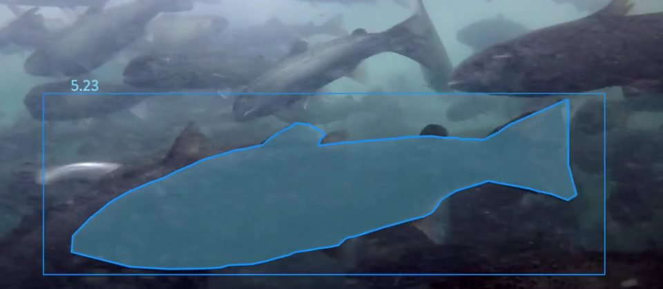

Forager HX800
Forager HX800 is an advanced end-to-end mushroom-harvesting robot that automates picking, trimming, and punnet packing, transforming commercial mushroom production at leading farms across three continents.
Watch DemoLeading AI for autonomous mushroom-harvesting robots, with 32 robots deployed across four countries.
Mehfuz leads the AI team at 4AG Robotics, building production AI systems for autonomous mushroom-harvesting robots. He played a key role in deploying 32 robots across leading mushroom farms in Canada, Ireland, Australia, and the Netherlands, helping maintain reliable field performance, protect product quality, and support repeat orders.
At 4AG, he designed a containerized AI model versioning and deployment system to track models before and after release. He also translated a client’s trimming and sorting challenge into a robotic solution that improved operational efficiency by more than 30%. He owns the machine learning system design for the trimming and sorting system, reducing peak GPU VRAM consumption by 41% through a C++ thread pool, bounded inference queues, and reusable GPU buffers. He also led the system design of a mushroom disease identification and alert system, whose multi-level identification approach reduced false positives by 18% in production. He managed a budget exceeding $100K through the initial build and championed patent protection for the solution with senior leadership. Alongside technical delivery, he mentors junior and mid-level AI developers and helps build a team focused on rigorous engineering and practical results.
Previously, at ReelData AI, he helped architect a fish biomass estimation system and selected a feature-matching algorithm that reduced processing time by 300 ms per iteration, improving overall pipeline speed by approximately 40%. He containerized ML workloads with Docker, deployed inference services on Kubernetes, led the adoption of AWS S3 in the data pipeline, and automated data labelling, increasing labelling speed by 25%.
Earlier, at Modest Tree, he led critical algorithm design for the Tech Companion project, removing a 3D depth data processing bottleneck in the neural network architecture to reach the required processing speed for defence-sector applications. He advocated model pruning and conversion to TensorRT, tuned to the target GPU’s specifications, to optimize inference speed.
Education: Master of Applied Science, with thesis research in deep learning architectures, from Saint Mary’s University, Canada. Bachelor degree in Computer Science and Engineering, awarded with highest distinction, from BRAC University.
Several years of owning and solving production problems for real-world AI products, from research prototypes to robots running on mushroom farms across four countries.
Selected industry projects where I built AI systems that delivered measurable impact in production environments.
Forager HX800 is an advanced end-to-end mushroom-harvesting robot that automates picking, trimming, and punnet packing, transforming commercial mushroom production at leading farms across three continents.
Watch Demo
ReelWeight enables continuous, non-intrusive fish biomass estimation, eliminating manual sampling and reducing fish handling stress and mortality risk. Maintains uninterrupted feeding schedules to improve appetite, reduce feed waste, and enhance feed efficiency, supporting up to 1.5× production capacity. Provides real-time biomass insights that simplify farm operations and enable faster, data-driven feeding and health management decisions.
ML · Python · AWS · Production Systems
Watch Demo
A platform for 3D interactive training, powered by AI and mixed reality applications. ML development through industry research collaboration with Modest Tree Media Inc.
Watch DemoGraduate research in deep learning and an undergraduate degree in computer science and engineering.
Saint Mary's University · Halifax, Nova Scotia
BRAC University · Dhaka, Bangladesh
Saint Mary's University · Halifax
Saint Mary's University · Halifax
Patents and research works. Titles link to the official publication or patent page.
This patent is for the mushroom trimming and sorting system at 4AG Robotics.
This research presents an approach to RGB-D object detection using a weighted hyper-involution method.
This research investigates deep neural network architectures for detecting cricket bowling deliveries.
This research applies MFCC audio features and deep neural networks to cockpit voice recorder sound classification.
Open to conversations about AI systems, engineering leadership, production AI, and ambitious technology teams.
I’m particularly interested in opportunities where technical depth, AI systems, and engineering leadership come together.
Get in Touch